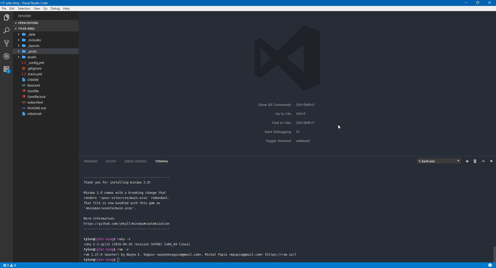

Back in November I wrote a post about how to develop sanely on Windows. It was a successful experiment which resulted in a usable environment to develop.
Today, I am re-visiting this with some more notes as I've now been full-time developing on Windows for a month now. With this, I've changed some tactics and have come to a much more streamlined solution.
Changes
Previously I installed Ubuntu Server onto VMWare. I would SSH into the environment using a terminal and had a shared development folder so I could use the browser and editor on Windows' side, while all code execution was contained on the VM side.
Now, I've done away with the VM. With Docker working well on Windows, there's really not much need for a VM anymore since Docker is a more full-featured stable solution anyways; but the big change... WSL (Bash on Ubuntu on Windows).
I previously explored this option last time but it was incomplete and had issues, mainly the lack of inotify support for file system notifications which most build systems rely on. With the latest creator's update released this month, they not only solved the inotify issues but many others.
I've now switched to using a combination of using WSL and Docker - it works wonderfully.
Side Note
The great thing about WSL is it can easily integrate with VSCode's integrated terminal feature.

In conclusion... I've had no issues yet with this setup. Docker + WSL + Windows = A happy environment.
Cover image credit: Teddy Kelley